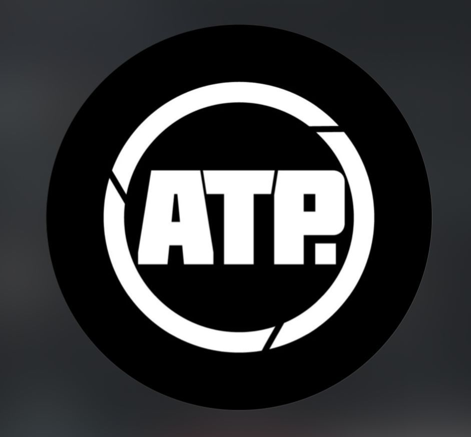
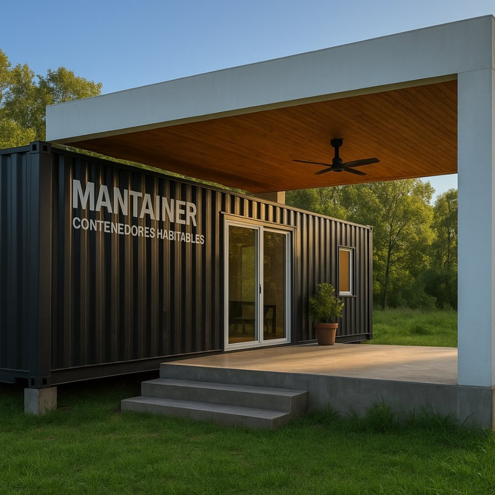

Resultados reales. Clientes reales.

Corner
Acompañamiento Estratégico
"Desde el inicio del proyecto, el acompañamiento de INTEGRA fue clave para transformar una idea en un negocio concreto. No solo aportaron orden y estructura, sino también una mirada estratégica que nos permitió tomar decisiones con mayor claridad y seguridad.
Sin dudas, el trabajo conjunto nos permitió avanzar con mayor confianza, orden y dirección, sentando bases sólidas para el funcionamiento de Corner."

ATP
Valuación y Expansión
"El trabajo con Integra nos permitió ordenar y entender el negocio en profundidad, desde el diagnóstico inicial hasta la valuación económica y el análisis de expansión.
Además, las instancias de coaching individual fueron un diferencial clave... Hoy contamos con una mirada mucho más integral del negocio y con un camino claro para seguir creciendo."
Travel Market La Plata
Diagnóstico y Decisión Societaria
"Teníamos el negocio funcionando pero por dentro no cerraba. Los roles no eran claros, las decisiones se tomaban sin información real y la dirección de la sociedad no estaba alineada. INTEGRA entró y abrió los números reales.
Lo que más nos cambió fue eso. Pasar de operar con intuición a tomar decisiones con respaldo real. Hoy cada decisión que tomamos tiene un porqué claro detrás."

MANTAINER Contenedores
De Idea a Empresa
"Cuando llegamos a INTEGRA no teníamos un negocio. Teníamos una idea. El proceso arrancó desde cero — modelo de negocio, estructura de costos, proyección financiera, roles, procesos.
Lo que más valoramos fue que no nos dieron un plan y se fueron. Se quedaron mientras lo construíamos. Acompañaron cada decisión, cada ajuste. La diferencia entre tener una idea y tener una empresa es exactamente lo que INTEGRA nos ayudó a construir."